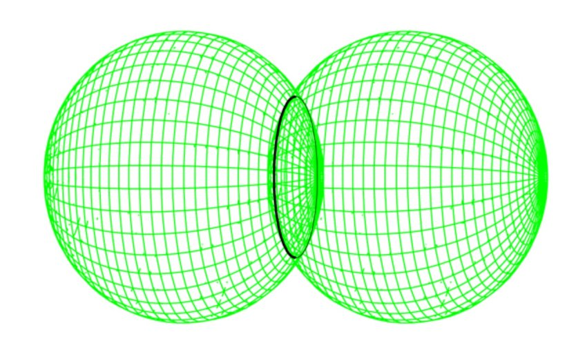
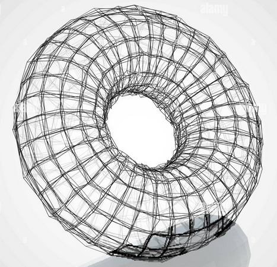
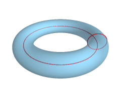
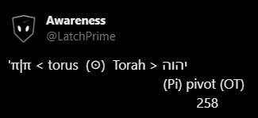
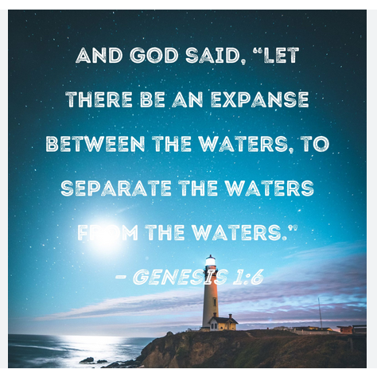
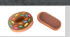

Chapter 2 The Pool of Tears
Emotions are e motion or energy in motion are
natural reactions to thought and the substrate thought uses to form reality.
Water symbolizes emotions as does magnetism.
Nebulous flexible Awareness called Emotion ( feminine ) can be referred to as Water, and magnetism.
As two sides of the same coin, Fire and Water both flow. One up; one down.
The two spheres around the Father and the Son intersect as a Circle.

Everything IS a Circle.
Kinda looks like 0 ( Zero )..
A Torus is a 3D circle.

or a circle pinned perpendicularly to another circle (YHVH)


The O therein serves as the Observer, Spirit, Difference or Awareness.
An O in the midst of two things saying, “Hey!”
HOH
The Trinity IS Water.
Father, Son, and Holy Spirit.
Water is Mother. Mem in Hebrew means water. Am = Ma. ( I + Am ) = I am ( the Son ).
Matter is What erm.. matters. Madder than a hatter.
Matter and Water are almost the same word but the meaning of the initials are flipped.
Matter starting with Mem ( M = water )
Water starting with Shin or Sin ( W = teeth )
So Water starts with hard teeth an matter starts with soft Water.
There was nothing but the Trinity AKA Water until
God Decided It Be Divided. < cue beatbox >

He in His Will (Thought or Fire) turned some of the
Water into Air( Mind ) and some of it into Earth ( Matter ).

So 1 or I is Fire, Masculine and
0 or O is Water, Feminine.
Φ looks like a party when the line is in the torus.
Φ The power button turning you on and off between 1 and 0.
Boing! Git yer mind outa the gutter! So hot.
It is Will in the midst of Potential.
It doesn’t take a rocket surgeon to see how
One Point becomes
Two becomes a
Line becomes a
Torus.
Point>Line>Fire>Straight>Male>Round>Female>Trinity> Water>Space
The Trinity in 3D All from One Singular Datum of Pure Existence ( to Whom we refer to as, Father God )
Sorry, only two genders right at the foundation of reality.

Derivatives are just that, derivative.
Any identity beyond I is derivative.